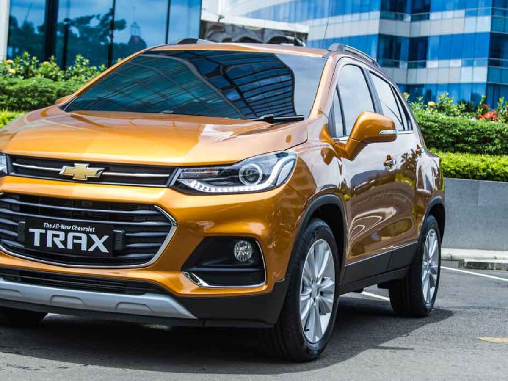

Jakarta, 25 Februari 2026

Chevrolet Trax terbaru dengan desain sporty dan elegan.
Chevrolet kembali menghadirkan inovasi terbaru melalui Chevrolet Trax 2026. Mobil SUV kompak ini tampil dengan desain lebih modern, gril depan yang tegas, serta lampu LED tajam yang memberikan kesan sporty dan elegan.
Mobil ini sangat cocok digunakan sebagai kendaraan keluarga maupun anak muda yang aktif. Dengan kapasitas 5 penumpang, kabin terasa luas dan nyaman untuk perjalanan dalam kota maupun luar kota.
Dari sisi performa, Chevrolet Trax dibekali mesin yang efisien bahan bakar namun tetap bertenaga. Fitur keselamatan seperti airbag, ABS, kontrol stabilitas, serta kamera parkir membuat pengalaman berkendara menjadi lebih aman.
© 2026 Portal Otomotif Indonesia